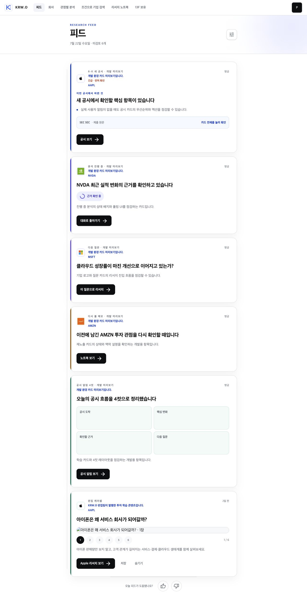
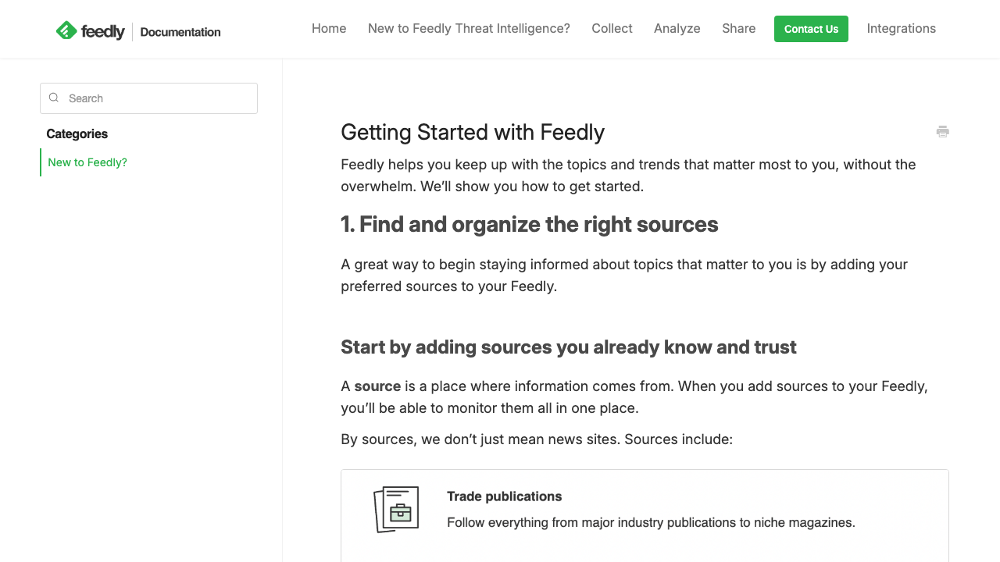
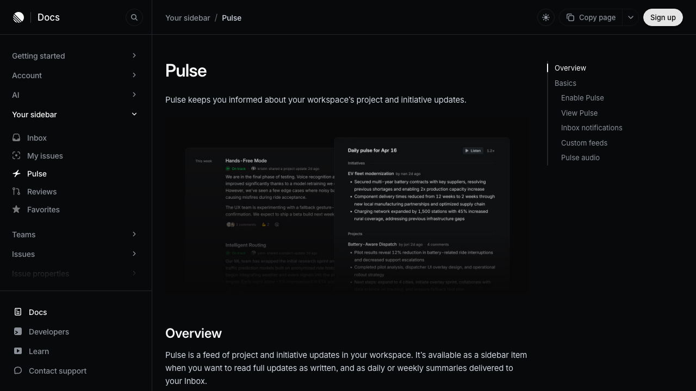

KRW.O · Pulse V5 audit · 2026-07-22
Design Improvement: 현재 피드
현재 로컬 로그인 계정과 실제 렌더링 화면, 후보 생성 코드, 로컬 Supabase 데이터를 함께 대조한 재평가입니다.
플랫 피드와 서버/기기 신호 분리는 맞게 구현됐습니다. 하지만 현재 화면의 상위 5개가 개인화 결과가 아닌 개발용 고정 카드라 실제 추천 1개를 가리고 있습니다. 지금 가장 큰 개선은 랭킹 공식 수정이 아니라 개발 쇼케이스를 실제 피드에서 완전히 분리하고, 후보가 부족한 콜드스타트 계정에는 관심 회사 기반의 다음 질문을 생성하는 것입니다.
Current State

| 관찰 항목 | 현재 상태 | 판단 |
|---|---|---|
| 로그인 계정 | pulse-demo-20260720@local.test | 이전 운영 계정 평가와는 별개의 로컬 테스트 계정 |
| 명시적 관심 | ABBV = interest, AAPL = 표시만 있음 | 새 사건이 없다면 ABBV 맥락의 다음 질문이 우선되어야 함 |
| 최근 리서치 | 90일 내 완료 실행 0, 회사 채팅 0 | 리서치 횟수 기반 개인화는 이 계정에서 발동할 데이터가 없음 |
| 실제 소스 후보 | 현재 공시 후보 0, 열린 질문 0, 재노출 노트 0, AAPL 편집 콘텐츠 1 | 현재 알고리즘상 AAPL 학습 카드만 남는 것은 기계적으로는 정상 |
| 렌더링 후보 | 개발 fixture 5 + 실제 AAPL 1 | 사용자 관점에서는 추천 근거와 미검토 수가 왜곡됨 |
| 이미지 | 편집 캐러셀 첫 이미지 naturalWidth=0 | CSP의 img-src가 로컬 Supabase Storage 포트를 허용하지 않아 깨짐 |
| 분석 이벤트 | 화면은 6개인데 최신 pulse_viewed는 item_count=0 | 초기 빈 셸만 기록되어 운영 지표로 추천 품질을 판단할 수 없음 |
Improvement Ideas
1. 개발 쇼케이스를 실제 피드에서 분리 최우선
NODE_ENV=development라는 이유만으로 모든 요청에 fixture를 섞지 말고, /dev/pulse-showcase 또는 명시적 ?showcase=1에서만 렌더링하세요. fixture는 미검토 수, 기기 피로도, 노출 분석, 실제 랭킹 후보에 절대 들어가면 안 됩니다.
Inspired by: X Home Mixer는 후보 생성, 필터, 랭킹, 믹싱을 분리하고 테스트/비피드 모듈을 최종 선택 단계에서 명시적으로 섞습니다. 현재 구현은 테스트 후보가 사용자 후보와 같은 랭커에 들어가 경계를 무너뜨립니다. [Web · X Home Mixer]
실제 /pulse /dev/pulse-showcase ┌──────────────────┐ ┌──────────────────┐ │ 사용자 후보만 │ │ Filing fixture │ │ 관심·리서치·사건 │ │ Analysis fixture │ │ 기기 피로도 적용 │ │ Carousel fixture │ └──────────────────┘ └──────────────────┘
2. 후보 부족 시 관심 회사 기반 “다음 질문”을 첫 카드로
현재 계정처럼 관심 회사는 있지만 새 공시·완료 리서치·노트가 없는 경우, 무관한 글로벌 학습 카드보다 관심 회사 질문을 합성해야 합니다. 이 계정의 기대 순서는 ABBV 다음 질문 → ABBV/AAPL 새 사건 → 관련 학습 → 일반 발견입니다. 이유 문구도 “ABBV를 관심 회사로 설정해서”처럼 직접적이어야 합니다.
Inspired by: Feedly는 사용자가 이미 신뢰하는 소스와 관심 토픽을 먼저 구성하고, 관련성·중복 제거·뮤트로 노이즈를 줄입니다. [Web · Feedly]

ABBV · 관심 회사 ┌────────────────────────────────────┐ │ 이번 주 ABBV에서 무엇을 확인할까요? │ │ ① 휴미라 이후 성장축 ② 마진 변화 │ │ [질문 선택] [직접 입력]│ └────────────────────────────────────┘
3. 카드 높이를 줄이고 “결정 정보”를 먼저
현재 6개 카드가 약 한 화면의 3배 이상을 차지합니다. 기본 카드는 회사/유형, 제목, 한 줄 이유, 한 개의 주 행동만 보여주고 세부 근거는 펼침 또는 상세 화면으로 보내세요. 캐러셀 같은 고밀도 콘텐츠는 첫 2개의 행동 가능한 카드 이후 한 번만 배치하는 편이 좋습니다.
Inspired by: Linear Pulse는 하나의 스트림 안에서 제목·핵심 변화·연관 맥락을 촘촘히 배치해 여러 업데이트를 한 번에 스캔하게 합니다. [Web · Linear Pulse]

ABBV · 새 공시 · 2시간 전 수익성 전망에서 바뀐 두 가지 관심 회사이며 최근 확인하지 않은 공시입니다. [근거 보기 →] ⋯
4. “미검토”와 분석 이벤트를 실제 로드 이후 기준으로 계산
개발 fixture, 진행 중 분석, 학습 카드는 미검토 업무 수에 포함하지 마세요. 또한 pulse_viewed는 초기 빈 셸에서 한 번 기록하는 대신 첫 정상 slate가 확정됐을 때 기록해야 합니다. 그렇지 않으면 노출 0으로 저장되어 A/B 테스트와 랭킹 평가가 왜곡됩니다.
Inspired by: Linear Inbox는 읽기·스누즈·삭제 같은 명시적 상태를 알림 카운트와 동기화합니다. “보였다”와 “처리할 일”을 분리하는 패턴입니다. [Web · Linear Notifications]
7월 22일 수요일
처리할 신호 1개 · 진행 중 0개
(학습 콘텐츠는 카운트 제외)
5. 편집 이미지의 로컬 CSP 허용 범위 수정
현재 이미지 URL은 http://localhost:54321/storage/...이고 파일 자체는 HTTP 200이지만, 페이지 CSP의 img-src에는 localhost:54321이 없어 브라우저가 차단합니다. 개발 환경에서만 정확한 Supabase Storage origin을 허용하고, 운영에서는 등록된 Supabase CDN origin만 허용해야 합니다.
img-src 'self' data: blob:
https://cdn.brandfetch.io
http://localhost:54321 ← dev only
https://*.supabase.co ← prod
What's Working
- 보이는 섹션 없이 하나의 플랫 스트림으로 합친 방향은 맞습니다.
- 서버의 관심·완료 리서치 점수와 기기의 노출·열기·피로도 상태를 분리한 경계가 설명 가능합니다.
- 카드 전체 클릭과 구체적인 주 행동이 있어 다음 리서치로 이동하기 쉽습니다.
- 동일 티커 과다 노출, 완료 분석 수, 발견 후보 수를 제한하는 믹싱 안전장치가 이미 있습니다.
1) fixture 분리 → 2) 이미지 CSP 수정 → 3) 실제 로드 후 카운트/분석 기록 → 4) 관심 회사 cold-start 질문 후보 → 5) 카드 밀도 조정. 이 순서여야 먼저 신뢰할 수 있는 피드 데이터를 얻고, 그 다음 랭킹을 튜닝할 수 있습니다.
All References
Lazyweb MCP 검색 도구는 현재 세션에 노출되지 않아, 설치된 Lazyweb 개선 절차와 공식 제품 문서의 라이브 캡처를 사용했습니다.